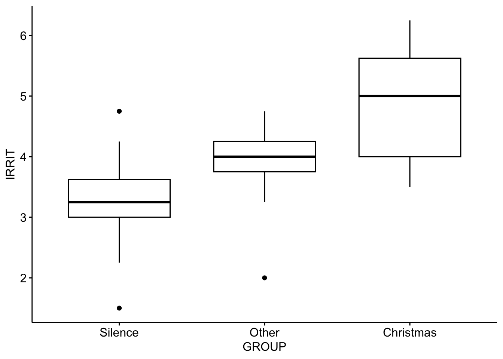

Chapter 12 ANOVA
This Chapter provides analysis and examples related to the second part of Lecture 8.
Let’s pick up exactly where Chapter 8 left off. That chapter showed that people who did a boring proofreading task with Christmas music playing ended up more irritated than people who did the identical task in silence — but it couldn’t tell us whether that was really about Christmas music, or just about having background music of any kind playing while you’re bored. Silence was the only comparison available, so the design couldn’t separate the two explanations.
Study 2 fixes that by adding a third group: people who did the same task with background music that wasn’t Christmas music, but was matched to it on tempo and familiarity, so it isn’t a softer comparison to beat just because it’s blander. Now there are three groups — Silence, Other (music), and Christmas — which finally lets us ask the question Chapter 8 left hanging: is it Christmas music specifically that’s the problem, or just having something playing in the background at all? Randomly assigning people to one of the three groups is exactly the confound-neutralising move from Chapter 4 — it’s what lets this design pull the two explanations apart at all.
With three groups instead of two, running three separate t-tests would walk straight into the multiple comparisons problem (more on that in the next chapter). ANOVA instead tests whether there’s a difference among all three groups with a single significance test, which is where we’ll start.
## ID GROUP IRRIT_IRRITATED IRRIT_ANNOYED IRRIT_TENSE
## Min. : 1 Silence :15 Min. :1.000 Min. :2.000 Min. :2.000
## 1st Qu.:12 Other :15 1st Qu.:3.000 1st Qu.:3.000 1st Qu.:3.000
## Median :23 Christmas:15 Median :4.000 Median :4.000 Median :4.000
## Mean :23 Mean :4.133 Mean :3.978 Mean :4.111
## 3rd Qu.:34 3rd Qu.:5.000 3rd Qu.:5.000 3rd Qu.:5.000
## Max. :45 Max. :7.000 Max. :7.000 Max. :7.000
## IRRIT_ONEDGE IRRIT
## Min. :1.000 Min. :1.500
## 1st Qu.:3.000 1st Qu.:3.500
## Median :4.000 Median :4.000
## Mean :3.756 Mean :3.994
## 3rd Qu.:5.000 3rd Qu.:4.750
## Max. :6.000 Max. :6.250## # A tibble: 6 × 7
## ID GROUP IRRIT_IRRITATED IRRIT_ANNOYED IRRIT_TENSE IRRIT_ONEDGE IRRIT
## <dbl> <fct> <dbl> <dbl> <dbl> <dbl> <dbl>
## 1 1 Silence 3 4 2 5 3.5
## 2 2 Silence 3 3 4 3 3.25
## 3 3 Silence 3 3 3 3 3
## 4 4 Silence 5 4 4 4 4.25
## 5 5 Silence 4 2 4 3 3.25
## 6 6 Silence 3 2 3 3 2.75Let’s create a quick table of the group means, and visualize it with a simple boxplot of the groups.
## # A tibble: 3 × 5
## GROUP variable n mean sd
## <fct> <fct> <dbl> <dbl> <dbl>
## 1 Silence IRRIT 15 3.28 0.807
## 2 Other IRRIT 15 3.87 0.661
## 3 Christmas IRRIT 15 4.83 0.88
Interesting picture. Silence is our baseline, Other is the matched background music without any Christmas content, and Christmas is, well, Christmas music. This is what we might call ‘model-free’ analysis. We are just looking at the data to see if intuitively it looks like we expect it to.
Let’s run an ANOVA now, which places a statistical model on it, and tests whether or not the data supports the model.
## ANOVA Table (type II tests)
##
## Effect DFn DFd F p p<.05 ges
## 1 GROUP 2 42 14.822 1.35e-05 * 0.414Results here suggest there is a significant effect (p-value is very small). We also have an effect size measure (‘ges’, or generalized eta-squared) which is very useful to us, and suggests the effect is quite large. This can be interpreted similarly to a regression coefficient (which is also an effect size measure), and is the amount of variance in the dependent variable (irritation) that is explained by group membership.
However, ANOVA only tests the general effect of the treatment / group. We don’t know whether this is because of the difference between all of the groups, or only some. If it’s background music in general that’s irritating, we’d expect Silence to differ from both Other and Christmas, but Other and Christmas to look much the same as each other. If it’s Christmas music specifically, we’d expect the opposite pattern: Christmas differs from both Silence and Other, but Silence and Other look much the same as each other. Only a post-hoc comparison of every pair can tell us which of these it actually is.
12.1 Post-Hoc Testing
We can investigate this using post-hoc tests, which compare the difference between each pair of groups. There are many different types of post-hoc test for ANOVA, but the most typical one to use is the Tukey’s test, which is what we will do here.
## # A tibble: 3 × 9
## term group1 group2 null.value estimate conf.low conf.high p.adj
## * <chr> <chr> <chr> <dbl> <dbl> <dbl> <dbl> <dbl>
## 1 GROUP Silence Other 0 0.583 -0.115 1.28 0.118
## 2 GROUP Silence Christmas 0 1.55 0.851 2.25 0.00000878
## 3 GROUP Other Christmas 0 0.967 0.268 1.67 0.00464
## # ℹ 1 more variable: p.adj.signif <chr>We can actually plot these results in a really effective way:

This is the Christmas-specifically pattern from a moment ago: Christmas differs clearly from both Silence and Other, and Silence and Other don’t differ significantly from each other (p = .118). Taken at face value, that looks like a clean answer — it really is something about Christmas music, not background music in general.
But look at the Silence-vs-Other comparison a bit more carefully, because this is exactly the case that a bare significant/not-significant reading undersells. Its 95% confidence interval is -0.12 to 1.28. That interval only just crosses zero — the lower bound is a hair’s breadth into negative territory. Reading “not significant” as “proven: no difference” throws away exactly the information the interval is offering, which is that the data are entirely compatible with a real, positive difference too; there just isn’t enough precision at n = 15 per group to rule zero out. A p-value collapses that whole interval down to one bit of information, pass or fail, and right at a boundary this close, that’s precisely where the collapse costs you the most. I’d want a bigger sample before I’d rule out any effect of background music in general — this result argues for “Christmas specifically, at least as far as we can tell from here,” not “definitely, only Christmas, case closed.”
However, this type of post-hoc analysis has the potential for what is known as a multiple comparisons problem, which we might need to deal with.
Let’s take a look back in the slide deck…
Remember, there are many other things that if we were doing ANOVA that we would also look to deal with - such as the various assumptions required of ANOVA, and so forth. But, they are beyond our scope in this class. Suffice to say that this has only scratched the surface of ANOVA so far.